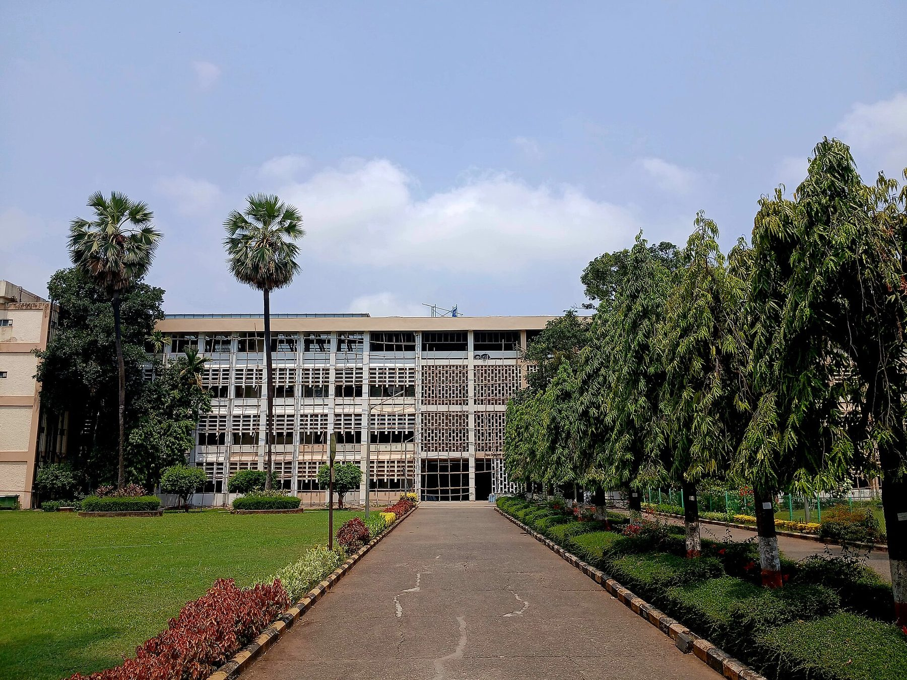

Design your
own degree.
The Centre for Multidisciplinary Education at IIT Bombay lets you choose your own coursework across every department — and graduate with a Bachelor of Science built entirely around your curiosity.
One institute.
Every discipline. Your path.
CME is an initiative of IIT Bombay for students who refuse to be boxed into a single branch. After your first year, you join CME and gain the freedom to assemble courses — electives and core courses — from any department.
A dedicated Faculty Advisor helps you turn that freedom into a coherent, rigorous plan. The result is a degree as individual as you are, inspired by the flexible models of MIT and Harvard.

IIT Bombay · PowaiFreedom, with a compass.
Radical academic flexibility, held together by mentorship, structure and purpose.
Follow your passion
Build a degree around what genuinely drives you — not a template handed down by a single department. Your curiosity sets the direction.
Freedom across every department
Choose electives and even core courses from any department at IIT Bombay — CSE, EE, Mechanical, Mathematics, Humanities, Design, Management and more.
1-on-1 faculty advisor
A dedicated Faculty Advisor (FacAd) guides you every semester and approves your individual Plan of Study, so freedom never means drift.
An individualised curriculum
No two CME students follow the same path. Your combination of courses, seminars and projects is uniquely yours.
Research from your third semester
Work directly with professors on 4-credit Seminars from Sem 3, growing into full 6-credit research Projects in your final year.
A globally recognised BS
Graduate with a Bachelor of Science — the global standard for science & engineering at MIT, Stanford and Harvard — with a declared specialisation.
Six areas. One well-rounded mind.
Before you specialise, you earn six credits in each of six foundation areas — a genuine grounding across the sciences, humanities and design.
Humanities & Social Sciences
Language, literature and the study of society and the human condition.
Design
Design thinking, product design and how people interact with technology.
Management
Management, marketing, finance and the practice of building ventures.
Economics
Economic reasoning, decision theory and the forces shaping markets.
Environmental & Rural Studies
Sustainability, environment and technology for development.
Engineering
A foundation in core engineering — any introductory course beyond the first year.
Four ways to graduate.
Every CME student earns a Bachelor of Science in one of four concentrations — chosen through the electives you love.
Engineering Sciences
For students who want deep engineering ability without being boxed into one branch — spanning computation, electronics, robotics, controls and beyond.
Natural Sciences
For the mathematically and scientifically curious — probability, analysis, optimisation and the physical sciences underpinning modern research.
Social Sciences
For those drawn to economics, policy and the systems that shape society — from public policy to the economics of healthcare and development.
Art & Design
For makers and storytellers — human-centred design, interaction, creative technology and the craft of building things people love.
Seminars that cross every border.
From reinforcement learning to raga recognition, from quantum entanglement to archaeology — a glimpse of where CME curiosity goes.
Physics-Informed Neural Networks
Quantum Entanglement and Bell's Inequalities
Computational Aspects of Hindustani Classical Music & Raga Recognition
Archaeology and Other Sciences: A Bidirectional Exchange of Methods
Hilbert's Programme, Gödel and the Limits of Formalising Mathematics
Game-Theoretic Approaches to Multi-Agent Reinforcement Learning
From this classroom to those companies.
CME students intern where the best of tech, finance and research recruit — on the strength of their skills and portfolios.


Mentored by twelve departments at once.
The Inter-Departmental Programme Committee (IDPC) brings together faculty from across IIT Bombay to guide every CME student.
 Computer Science
Computer Science Industrial Design Cent
Industrial Design Cent Shailesh J. Mehta Scho
Shailesh J. Mehta Scho Chemistry
Chemistry Industrial Design Cent
Industrial Design Cent Metallurgical Engg.
Metallurgical Engg. Mechanical Engineering
Mechanical Engineering Biosciences
BiosciencesReady to design a degree that looks like you?
Complete your first year, keep your curiosity, and bring it to CME. The interview is a conversation — not an exam.